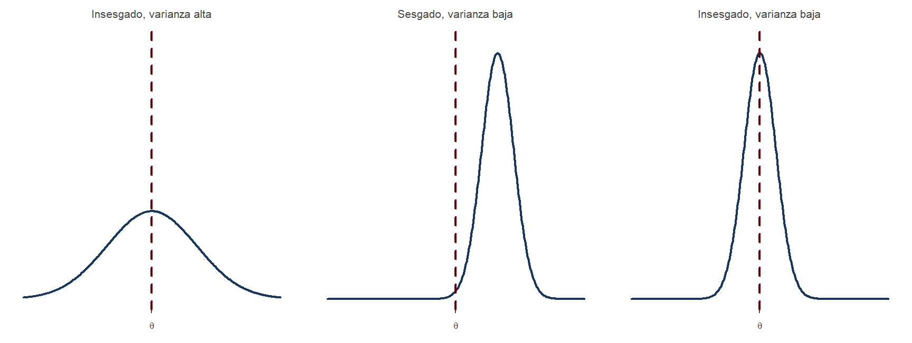
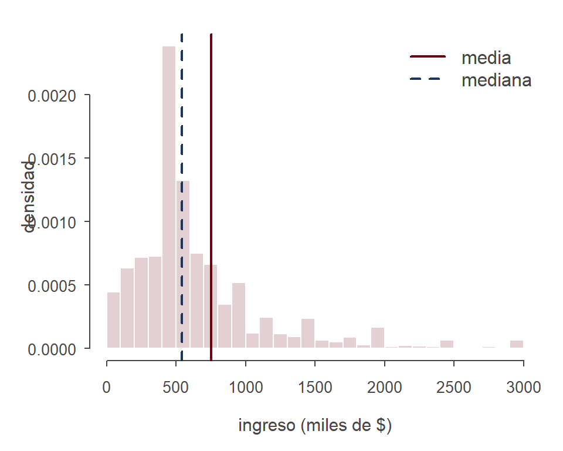
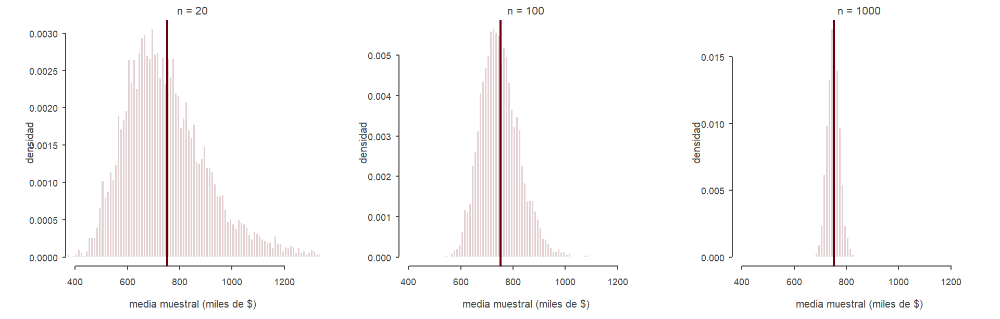
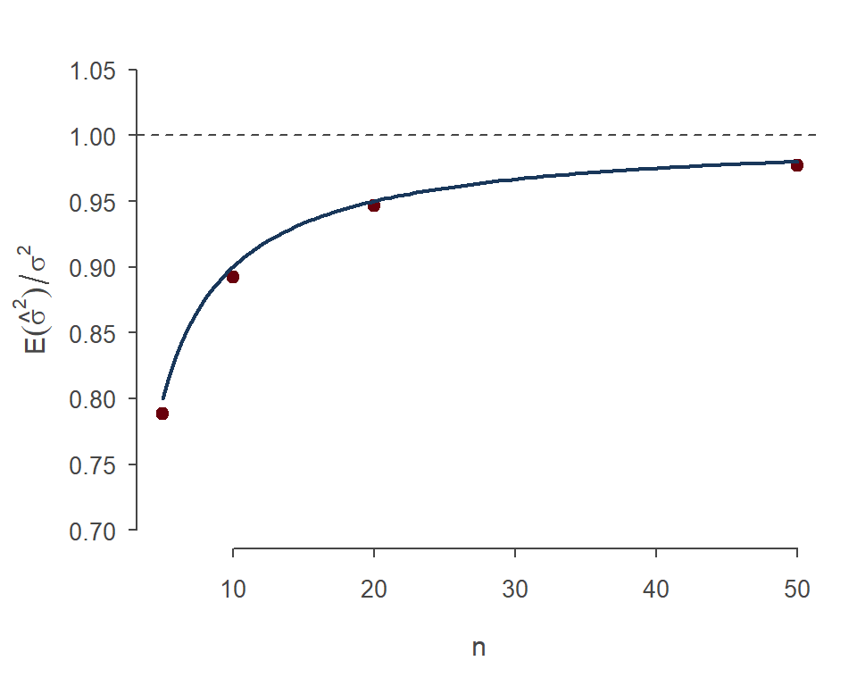

casen <- read.csv("../../data/casen2024_ocupados.csv")
dim(casen)[1] 95434 12ing <- casen[!is.na(casen$yoprcor), ] # ocupados con ingreso informado
nrow(ing)[1] 92548Estadística y Econometría
UCH / INE
2026-10-25
En la clase pasada vimos cómo construir estimadores con el principio de analogía, y que todo estimador \hat\theta es una variable aleatoria con su propia distribución muestral.
Pero para un mismo parámetro suele haber muchos estimadores posibles. Para estimar \mu = \mathbb{E}[X] podríamos usar:
¿Cómo elegir? Necesitamos criterios para comparar distribuciones muestrales (Casella & Berger, 2002; Hansen, 2022).

Cada curva es la distribución muestral de un estimador distinto; la línea roja marca el valor verdadero \theta. Queremos distribuciones centradas en \theta y concentradas a su alrededor.
Definición: Sesgo
El sesgo de un estimador \hat\theta de un parámetro \theta es \text{sesgo}(\hat\theta) = \mathbb{E}[\hat\theta] - \theta Un estimador es insesgado si su sesgo es cero (Casella & Berger, 2002; Hansen, 2022).
Por linealidad de la esperanza, como vimos la clase pasada: \mathbb{E}[\bar X_n] = \frac{1}{n}\sum_{i=1}^n \mathbb{E}[X_i] = \mu
Teorema
\bar X_n es insesgado para \mu = \mathbb{E}[X] si \mathbb{E}|X| < \infty (Hansen, 2022).
Pero no es el único. También son insesgados (Hansen, 2022):
En cambio, c\,\bar X_n con c \neq 1 tiene esperanza c\mu: es sesgado salvo que \mu = 0.
Las transformaciones lineales preservan el insesgamiento: si \hat\theta es insesgado para \theta, entonces a\hat\theta + b es insesgado para a\theta + b (Hansen, 2022).
Las no lineales, en general, no. Y la desigualdad de Jensen nos dice hacia dónde va el sesgo de \hat\beta = h(\hat\theta) (Casella & Berger, 2002; Hansen, 2022):
Ejemplo: aunque s^2 sea insesgado para \sigma^2, la desviación estándar s = \sqrt{s^2} está sesgada hacia abajo para \sigma, porque la raíz es cóncava.
Tip
“Razonable” e “insesgado” no son lo mismo. El insesgamiento es una propiedad deseable, pero es solo una de varias; a veces conviene aceptar algo de sesgo a cambio de otras ventajas (Hansen, 2022).
La varianza muestral de un estimador, \text{var}(\hat\theta), mide la dispersión de su distribución muestral: cuánto cambiaría \hat\theta de una muestra a otra (Hansen, 2022).
Para la media muestral ya la conocemos: \text{var}(\bar X_n) = \frac{\sigma^2}{n}
Y para transformaciones lineales: \text{var}(a\hat\theta + b) = a^2\,\text{var}(\hat\theta). Para transformaciones no lineales h(\bar X_n), la varianza exacta en general no está disponible; ahí usamos el método delta de la clase pasada (Hansen, 2022).
Comparación: X_1 es insesgado para \mu, igual que \bar X_n, pero \text{var}(X_1) = \sigma^2, que es n veces mayor. Ambos están centrados en \mu; \bar X_n está mucho más concentrado.
¿Cómo comparar un estimador con poco sesgo y mucha varianza con otro con algo de sesgo y poca varianza? Con una medida que combine ambas cosas.
Definición: Error cuadrático medio (ECM)
\text{ECM}(\hat\theta) = \mathbb{E}\big[(\hat\theta - \theta)^2\big] Es la distancia cuadrática promedio entre el estimador y el parámetro (Casella & Berger, 2002; Hansen, 2022).
Teorema: Descomposición del ECM
Para cualquier estimador con varianza finita, \text{ECM}(\hat\theta) = \text{var}(\hat\theta) + \big(\text{sesgo}(\hat\theta)\big)^2 (Casella & Berger, 2002; Hansen, 2022)
Sumamos y restamos \mathbb{E}[\hat\theta] dentro del cuadrado: \text{ECM}(\hat\theta) = \mathbb{E}\Big[\big(\underbrace{\hat\theta - \mathbb{E}[\hat\theta]}_{\text{aleatorio}} + \underbrace{\mathbb{E}[\hat\theta] - \theta}_{\text{constante}}\big)^2\Big]
Expandiendo el cuadrado: = \mathbb{E}\big[(\hat\theta - \mathbb{E}[\hat\theta])^2\big] + 2\big(\mathbb{E}[\hat\theta] - \theta\big)\,\underbrace{\mathbb{E}\big[\hat\theta - \mathbb{E}[\hat\theta]\big]}_{=\,0} + \big(\mathbb{E}[\hat\theta] - \theta\big)^2
= \text{var}(\hat\theta) + \text{sesgo}(\hat\theta)^2 \qquad \blacksquare
Para un estimador insesgado, el ECM es simplemente la varianza. Por ejemplo, \text{ECM}(\bar X_n) = \sigma^2/n (Hansen, 2022).
“Controlling bias does not guarantee that MSE is controlled. In particular, it is sometimes the case that a trade-off occurs between variance and bias in such a way that a small increase in bias can be traded for a larger decrease in variance, resulting in an improvement in MSE.” (Casella & Berger, 2002, p. 331)
Tip
Este dilema reaparece en todo el curso: al elegir cuántas variables incluir en una regresión, al elegir el ancho de banda en regresión discontinua y, más allá del curso, en los métodos de machine learning.
Restrinjamos la búsqueda a estimadores lineales \tilde\mu = \sum_{i=1}^n w_i X_i (Hansen, 2022):
Hay que minimizar \sum_i w_i^2 sujeto a \sum_i w_i = 1. El lagrangiano es \mathcal{L} = \sum_{i=1}^n w_i^2 - \lambda\left(\sum_{i=1}^n w_i - 1\right)
y la condición de primer orden, 2w_i - \lambda = 0, implica que todos los pesos son iguales. Para que sumen uno, w_i = 1/n. El óptimo es \bar X_n (Hansen, 2022).
Teorema: Mejor estimador lineal insesgado (MELI)
Si \sigma^2 < \infty, la media muestral \bar X_n tiene la menor varianza entre todos los estimadores lineales insesgados de \mu (Hansen, 2022).
En inglés se le llama BLUE (best linear unbiased estimator). El resultado es útil, pero “no muy profundo”, porque la clase de estimadores lineales es restrictiva (Hansen, 2022).
Hansen enuncia un resultado más fuerte, que demuestra en el capítulo 11:
Teorema: Mejor estimador insesgado
Si \sigma^2 < \infty, \bar X_n tiene la menor varianza entre todos los estimadores insesgados de \mu (Hansen, 2022).
Encontrar el mejor estimador insesgado en general no es fácil. Una herramienta clave es la cota de Cramér–Rao, que veremos la próxima clase junto con máxima verosimilitud (Casella & Berger, 2002).
Recordemos el estimador plug-in: \hat\sigma^2 = \frac{1}{n}\sum_{i=1}^n (X_i - \bar X_n)^2. ¿Es insesgado?
Paso 1. Si conociéramos \mu, usaríamos \tilde\sigma^2 = \frac{1}{n}\sum_{i=1}^n (X_i - \mu)^2. Es un promedio de variables i.i.d. con esperanza \sigma^2, así que \mathbb{E}[\tilde\sigma^2] = \sigma^2 (Hansen, 2022).
Paso 2. Con un poco de álgebra se obtiene \hat\sigma^2 = \tilde\sigma^2 - (\bar X_n - \mu)^2
Paso 3. Como \mathbb{E}[(\bar X_n - \mu)^2] = \text{var}(\bar X_n) = \sigma^2/n: \mathbb{E}[\hat\sigma^2] = \sigma^2 - \frac{\sigma^2}{n} = \left(1 - \frac{1}{n}\right)\sigma^2 < \sigma^2
Teorema
Si \mathbb{E}[X^2] < \infty, entonces \mathbb{E}[\hat\sigma^2] = \left(1 - \frac{1}{n}\right)\sigma^2 (Hansen, 2022).
¿Por qué subestima? Porque centra las observaciones en \bar X_n, no en \mu. Y \bar X_n es, por construcción, el valor que minimiza \sum_i (X_i - c)^2: las desviaciones respecto de \bar X_n son “artificialmente” pequeñas (Hansen, 2022).
Como el sesgo es proporcional, se corrige reescalando: s^2 = \frac{n}{n-1}\,\hat\sigma^2 = \frac{1}{n-1}\sum_{i=1}^n (X_i - \bar X_n)^2, \qquad \mathbb{E}[s^2] = \sigma^2
A s^2 se le llama estimador de la varianza corregido por sesgo. Es el que calcula var() en R. En muestras grandes la diferencia entre ambos es mínima (Hansen, 2022).
No necesariamente. En el modelo normal se puede calcular el ECM de ambos estimadores (Casella & Berger, 2002):
\text{ECM}(s^2) = \frac{2\sigma^4}{n-1} \qquad\qquad \text{ECM}(\hat\sigma^2) = \frac{2n-1}{n^2}\,\sigma^4
Y resulta que \text{ECM}(\hat\sigma^2) < \text{ECM}(s^2): el estimador sesgado está, en promedio, más cerca de \sigma^2. Su sesgo hacia abajo se compensa con creces con una menor varianza (Casella & Berger, 2002).
Advertencia
Esto no significa que haya que abandonar s^2. \hat\sigma^2 subestima \sigma^2 sistemáticamente, y el ECM castiga por igual sobreestimar y subestimar, lo que no es tan razonable para un parámetro que no puede ser negativo. No hay una respuesta absoluta: los criterios entregan información para elegir según el problema (Casella & Berger, 2002).
Conocer la fórmula \text{var}(\bar X_n) = \sigma^2/n no basta para medir la precisión, porque depende de \sigma^2, que es desconocido. Hay que estimarla (Hansen, 2022).
Definición: Error estándar
El error estándar s(\hat\theta) = \hat V^{1/2} de un estimador \hat\theta es la raíz cuadrada de un estimador \hat V de su varianza V = \text{var}(\hat\theta) (Hansen, 2022).
Para la media muestral, usando s^2: s(\bar X_n) = \frac{s}{\sqrt{n}}
Hay dos estimaciones en juego: \hat\theta estima \theta, y \hat V estima la precisión de \hat\theta. Por eso las estimaciones se reportan siempre junto con su error estándar (Hansen, 2022).
Ejemplo: las 20 asalariadas de la CPS de la clase pasada. El salario promedio es $25.73, con s = 12.4 (Hansen, 2022): s(\bar X_n) = \frac{12.4}{\sqrt{20}} \approx 2.78
Con solo 20 observaciones, el promedio de $25.73 tiene una incertidumbre del orden de $3 hacia cada lado.
Advertencia
Aunque s^2/n sea insesgado para \text{var}(\bar X_n), el error estándar s/\sqrt{n} está sesgado hacia abajo para \sigma/\sqrt{n}, de nuevo por Jensen. En la práctica se ignora, porque no hay un método aceptado para corregirlo (Hansen, 2022). Lo veremos en la simulación con CASEN.
Hasta ahora no supusimos nada sobre la forma de F. Si suponemos que X_1, \ldots, X_n son i.i.d. N(\mu, \sigma^2), se obtiene una teoría exacta para cualquier n (Hansen, 2022):
Teorema
Si X_i son i.i.d. N(\mu, \sigma^2), entonces
La clave de la independencia: los residuos X_i - \bar X_n no están correlacionados con \bar X_n, y como todo es conjuntamente normal, no correlación implica independencia (Hansen, 2022). Esto solo vale bajo normalidad.
Combinando los tres resultados: T = \frac{\sqrt{n}\,(\bar X_n - \mu)}{s} = \frac{\sqrt{n}\,(\bar X_n - \mu)/\sigma}{\sqrt{s^2/\sigma^2}} \sim \frac{N(0, 1)}{\sqrt{\chi^2_{n-1}/(n-1)}} = t_{n-1}
Historia. El resultado se debe a William Gosset (1908), que trabajaba en la cervecería Guinness. Como la empresa no permitía a sus empleados publicar, firmó con el seudónimo “Student” (Hansen, 2022).
Ninguna implica la otra (Cameron & Trivedi, 2005):
Tip
Un criterio suficiente que conecta ambas ideas: si \text{ECM}(\hat\theta) = \text{var}(\hat\theta) + \text{sesgo}^2 \to 0, entonces \hat\theta es consistente. Es la convergencia en media cuadrática de la clase pasada (Cameron & Trivedi, 2005).
| Población objetivo | Hogares en viviendas particulares ocupadas y sus residentes habituales |
| Diseño muestral | Probabilístico, estratificado y bietápico: las UPM son conglomerados de viviendas y la unidad final es la vivienda |
| Trabajo de campo | 1 de noviembre de 2024 al 2 de febrero de 2025 |
| Muestra lograda | 78 654 hogares y 218 367 personas |
| Representatividad | Nacional, urbana/rural y regional (16 regiones) |
(Ministerio de Desarrollo Social y Familia, 2025)
Trabajaremos con las personas ocupadas y su ingreso de la ocupación principal corregido (yoprcor), en pesos.
[1] 751426.1[1] 857333[1] 540000[1] 9217504El promedio simple describe a los encuestados. Pero CASEN no es una muestra aleatoria simple: cada persona tiene un factor de expansión (expr) que indica a cuántas personas de la población representa (Ministerio de Desarrollo Social y Familia, 2025). El estimador de \mu es el promedio ponderado, y la diferencia no es menor: cerca de $100 mil.
La muestra está diseñada para ser representativa en cada región, así que las regiones pequeñas están sobrerrepresentadas y la Región Metropolitana, subrepresentada:
muestra poblacion
0.2099343 0.4577583 La RM tiene cerca del 21% de los encuestados con ingreso, pero alrededor del 46% de los ocupados del país, y sus ingresos son más altos que el promedio. El promedio simple da muy poco peso a la RM y por eso subestima el ingreso medio nacional. El factor de expansión corrige ese desbalance.
Importante
El promedio ponderado es un estimador plug-in: reemplaza la distribución de la muestra por una que pondera a cada persona según cuántas representa.
y <- ing$yoprcor / 1000 # miles de pesos
hist(y[y <= 3000], breaks = seq(0, 3000, by = 100),
freq = FALSE,
col = "#69000C2E", border = "white",
main = "", xlab = "ingreso (miles de $)",
ylab = "densidad")
abline(v = mean(y), col = "#69000C", lwd = 2)
abline(v = median(y), col = "#19375A",
lwd = 2, lty = 2)
legend("topright", bty = "n",
legend = c("media", "mediana"),
col = c("#69000C", "#19375A"),
lty = 1:2, lwd = 2)
Como en los datos de EE.UU. de la clase 02, la media queda bastante por encima de la mediana. El gráfico excluye a menos del 2% de los encuestados, que ganan más de $3 millones. El peak entre $400 y $500 mil coincide con el salario mínimo, que desde julio de 2024 es de $500 mil.
Si tratáramos a los encuestados como una muestra aleatoria simple, el error estándar del promedio sería s/\sqrt{n}:
n s error_estandar
92548.000 746538.522 2453.967 Con más de 90 mil observaciones, el error estándar es de solo unos $2.500. Pero esta cifra supone muestreo i.i.d., y CASEN no lo es. Volveremos a esto al final.
Para ver las propiedades de los estimadores necesitamos conocer el parámetro verdadero. El truco: tratemos a los ocupados de CASEN como si fueran toda la población y saquemos muchas muestras aleatorias de ella.
mu sigma
751.4261 746.5345 Al muestrear con reposición, cada observación es una extracción i.i.d. de esta población: estamos exactamente en el marco teórico de las clases 03 y 04.
set.seed(2024)
par(mfrow = c(1, 3), mar = c(4, 5, 1.5, 1))
for (n in c(20, 100, 1000)) {
medias <- replicate(5000, mean(sample(pob, n, replace = TRUE)))
hist(medias, breaks = seq(0, max(medias) + 10, by = 10), freq = FALSE,
xlim = c(400, 1300),
col = "#69000C2E", border = "white", ylab = "densidad",
main = paste("n =", n), xlab = "media muestral (miles de $)")
abline(v = mu, col = "#69000C", lwd = 2)
}En los tres casos la distribución está centrada en \mu (insesgamiento) y se concentra al crecer n (consistencia). Con n = 20 todavía es claramente asimétrica: con ingresos de colas tan pesadas, el TCL necesita muestras grandes.

set.seed(1)
ns <- c(5, 10, 20, 50)
razon <- sapply(ns, function(n) {
v <- replicate(50000, {
x <- sample(pob, n, replace = TRUE)
mean((x - mean(x))^2) # sigma2 plug-in
})
mean(v) / sigma^2
})
plot(ns, razon, pch = 19, col = "#69000C",
ylim = c(0.7, 1.05), xlab = "n",
ylab = expression(E(hat(sigma)^2) / sigma^2))
curve(1 - 1/x, add = TRUE, col = "#19375A", lwd = 2)
abline(h = 1, lty = 2, col = "#464646")
Los puntos (simulación) siguen la curva teórica 1 - 1/n. Con n = 5, \hat\sigma^2 subestima la varianza en torno a un 20%. Con colas tan pesadas, la simulación es ruidosa incluso con 50 mil repeticiones.
¿Se parece el error estándar s/\sqrt{n} a la verdadera desviación estándar de \bar X_n?
n sd_teorica sd_simulada promedio_ee
[1,] 20 166.93019 171.22914 146.29321
[2,] 100 74.65345 73.24440 71.56014
[3,] 1000 23.60749 23.51179 23.36535La desviación estándar simulada de las medias coincide con \sigma/\sqrt{n}. El error estándar promedio queda por debajo, sobre todo con n = 20: es el sesgo hacia abajo que anticipaba Hansen, amplificado por las colas pesadas de los ingresos. Con n grande la diferencia desaparece.
Con el paquete survey podemos calcular un error estándar que respeta los estratos (varstrat), los conglomerados (varunit) y los factores de expansión:
Warning: package 'survey' was built under R version 4.6.1Cargando paquete requerido: gridCargando paquete requerido: MatrixCargando paquete requerido: survival
Adjuntando el paquete: 'survey'The following object is masked from 'package:graphics':
dotchart mean SE
yoprcor 857333 6163.3El error estándar de diseño es más del doble que el que calculamos suponiendo i.i.d. Las personas de una misma UPM se parecen entre sí, así que cada observación adicional aporta menos información que una extracción independiente. Es el contraejemplo del componente común de la clase 03, ahora con datos reales.
Nota
Lo estrictamente correcto es definir el diseño con toda la muestra y luego restringirlo a los ocupados con subset(). Aquí usamos la base reducida por simplicidad.
En la clase 02 vimos que m(x) = \mathbb{E}[Y \mid X = x] es el objeto central de la econometría. Se puede mostrar que es el mejor predictor de Y dado X: entre todas las funciones g(X), es la que minimiza el error cuadrático medio de predicción \mathbb{E}[(Y - g(X))^2] (Hansen, 2021).
Su estimador análogo más simple: el promedio de Y dentro de cada grupo de X.
El ingreso medio estimado sube con la escolaridad, con un salto grande en los niveles más altos. Cuando X toma muchos valores, ya no podemos promediar dentro de cada uno: necesitamos un modelo. Ese es el punto de partida de la regresión.
Conceptos clave:
Próxima clase:
Lecturas sugeridas
Estadística y Econometría — Clase 04